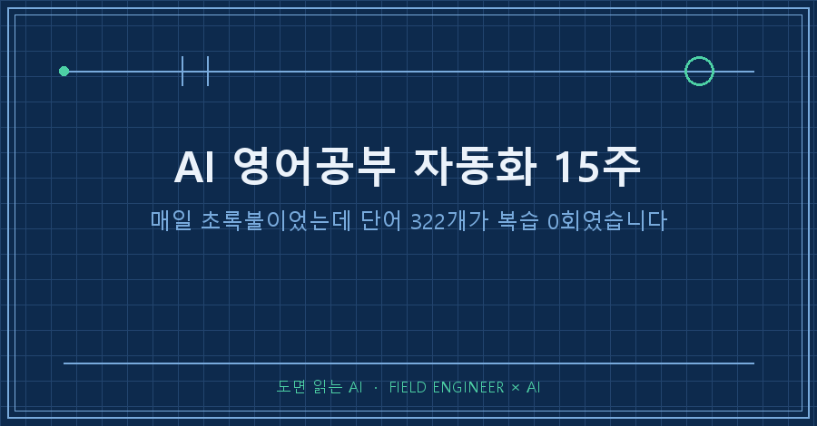
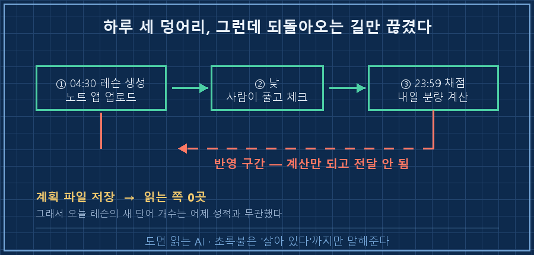
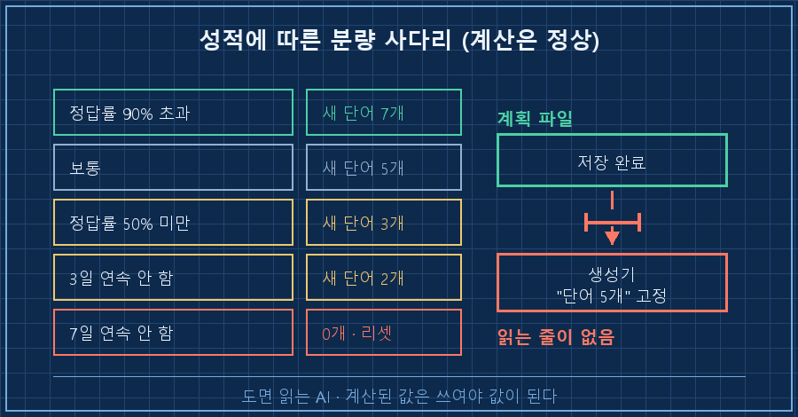
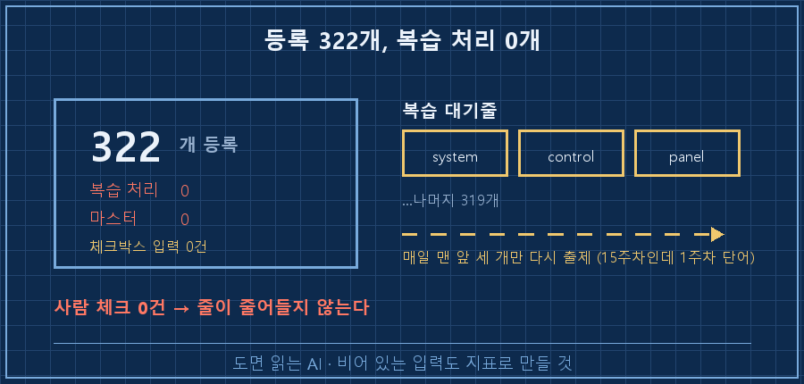

새벽 4시 반이면 영어 레슨이 한 장씩 만들어집니다. 제가 자는 동안에요.
넉 달째 하루도 안 빼먹고 돌았고, 어제 로그도 전부 정상이었어요.
그런데 어제 데이터베이스를 열어보고 좀 조용해졌습니다.
결론부터 적을게요.
AI 영어공부 자동화에서 어려운 건 레슨을 만드는 쪽이 아니라, 어제 내 성적이 오늘 레슨에 실제로 반영되게 만드는 쪽입니다. 저는 그 반영 구간이 15주 내내 끊겨 있는 걸 어제 알았어요. 파일은 매일 나왔고, 점검 결과는 매번 통과였고요.
15년을 현장 설비 쪽에서 보냈는데, 영어는 그 15년 내내 미뤄둔 숙제였어요.
그래서 올봄에 학원 대신 이걸 만들었습니다. 매일 새벽에 레슨을 뽑아 클라우드 노트에 올려주고, 밤에는 제가 그걸 했는지 확인해서 다음 날 분량을 조절하는 프로그램이요.
1. 하루가 이렇게 돌고, 넉 달 성적은 이래요
구조는 세 덩어리예요.
새벽 4시 반에 그날 레슨을 만들어 노트 앱에 올리고, 낮에 제가 그걸 풀고, 밤 11시 59분에 프로그램이 그 페이지를 다시 읽어 채점한 뒤 내일 분량을 계산합니다.
어제 로그는 이랬어요.
[2026-08-14T04:33:04] W15D1 | docx=영어학습_W15D1_2026-08-14.docx | qa=PASS
[OK] 노트 업로드: 영어학습_W15D1_2026-08-14세 줄 다 초록불이죠. 저는 이 로그를 넉 달 동안 초록불로만 봐 왔습니다.

이걸 자랑하기 전에 제 출석부터 봐야 공평하겠죠.
기록된 학습일 72일 중에 실제로 한 날이 51일, 안 한 날이 21일이었어요. 대충 열흘에 일곱 번 꼴입니다.
최장 연속 기록은 7일. 딱 일주일 넘기면 무너졌다는 뜻이죠..
솔직히 나쁘지 않다고 봐요. 혼자 결심으로 했으면 3주 안에 끝났을 겁니다.
안 하면 다음 날 아침 할일 앱에 잔소리가 뜨거든요. 하루 밀리면 "30분만 투자하세요", 사흘이면 "감 떨어집니다", 일주일이면 말투가 바뀝니다. "괜찮습니다, 5분짜리만 올려놨어요."
여기까진 잘 돌아간 이야기예요. 문제는 그 다음입니다.
2. 성적에 따라 분량을 줄이게 해뒀는데
제가 제일 공들인 부분이 이거였어요. 어제 퀴즈를 반도 못 맞히면 오늘은 새 단어를 줄이고 복습을 늘린다, 반대면 늘린다. 규칙은 코드에 그대로 있습니다.
elif accuracy < 0.5: # 어제 정답률 50% 미만이면
plan['difficulty'] = 'easy'
plan['extra_review'] = True
plan['new_words_count'] = 3 # 새 단어 5개 → 3개로 축소
plan['note'] = f'정답률 {accuracy*100:.0f}%. 복습 강화, 새 단어 축소.'정리하면 이런 사다리예요.
| 어제 상태 | 오늘 새 단어 | 모드 |
|---|---|---|
| 정답률 90% 초과 | 7개 | 난이도 상향 |
| 보통 | 5개 | 평소대로 |
| 정답률 50% 미만 | 3개 | 복습 강화 |
| 3일 연속 안 함 | 2개 | 가볍게 |
| 7일 연속 안 함 | 0개 | 리셋, 5분 복습만 |
어제 제 성적은 퀴즈 3문항 중 1개였어요. 33%니까 사다리 세 번째 칸입니다.
그러면 오늘 레슨엔 새 단어가 3개여야 하잖아요.
열어봤더니 5개였습니다.
3. 계산은 됐는데 아무도 안 읽고 있었어요
원인은 30초 만에 나왔어요.
밤에 도는 채점기는 계획을 성실히 계산해 파일로 저장합니다. 코드엔 "생성기가 이 파일을 읽는다"는 주석까지 붙어 있고요.
그런데 새벽에 도는 생성기를 열어보니, 그 파일을 읽는 줄이 아예 없었습니다. 대신 이렇게 돼 있었어요.
md.append(f"## 오늘의 단어 5개 (7분)") # 개수가 글자로 박혀 있음개수가 제목에 글자로 박혀 있었어요.
계산은 매일 정확하게 됐고, 결과는 파일로 잘 저장됐고, 그 파일을 열어보는 쪽만 없었던 겁니다.
이 고장은 아무 신호도 안 냅니다. 에러도 안 나고, 로그도 초록불이고, 산출물도 제시간에 나와요. 내용이 어제와 무관할 뿐이죠.
자동화가 죽는 방식은 두 가지더라고요. 하나는 요란하게 멈추는 것, 다른 하나는 멀쩡히 도는 척 하는 것.

4. 15주차 퀴즈에 1주차 단어가 나왔어요
기왕 연 김에 단어 쪽도 조회해봤어요. 여기가 더 심했습니다.
등록된 단어 322
한 번이라도 복습 처리된 단어 0
마스터로 표시된 단어 015주째인데 322개 전부가 "아직 한 번도 안 본 단어" 상태였어요.
단어를 복습했다고 표시하려면 제가 노트에서 체크박스를 눌러야 하는데, 어제 채점 기록에 읽어온 체크박스가 0개였습니다. 사람이 신호를 안 주니 프로그램은 아무것도 못 올리고, 단어들은 복습 대기줄에 그대로 서 있는 거죠.
그 결과가 산출물에 그대로 보여요.
오늘 레슨 맨 위 "어제 복습 퀴즈"에 나온 단어 세 개가 system, control, panel이었습니다. 15주차 레슨인데 1주차 단어예요. 대기줄 맨 앞 세 개를 매일 다시 꺼내오고 있었던 겁니다..
여러분도 혼자 굴리는 자동화 하나쯤 있으시죠? 그 산출물, 어제 것과 나란히 놓고 비교해본 게 언제인지 한번 떠올려보세요.

5. 그날 밤에 정한 세 가지
고칠 목록을 길게 적으면 하나도 안 하게 되더라고요. 그래서 셋만 남겼습니다.
1. 주 1회 눈으로 대조하기. 오늘 산출물 한 장을 열어 데이터베이스 값과 맞는지 두 군데만 봅니다. 저는 단어 개수랑 복습 퀴즈 단어로 정했어요.
2. 계산한 값이 쓰이는지 역추적하기. 저장한 계획 파일 이름을 코드 전체에서 검색해보면 끝납니다. 읽는 쪽이 0곳이면 그 로직은 없는 거예요.
3. 비어 있는 입력도 지표로 만들기. 체크박스가 사흘 연속 0건이면 성실한 0이 아니라 고장 신호니까요.
이런 게 궁금하실 것 같아요
Q. 그러면 이 자동화, 실패한 건가요?
절반은 성공이라고 봅니다. 출석률 71%는 제 의지로는 못 만든 숫자예요. 매일 뭔가가 도착하고 안 하면 잔소리가 오는 구조는 값을 했습니다. 다만 "성적에 맞춰 똑똑해진다"는 부분이 15주 동안 한 번도 작동한 적이 없었던 거죠..
Q. 사람이 매일 체크박스를 눌러야 하는 구조가 잘못된 거 아닌가요?
맞아요. 사람 손을 타는 입력은 언젠가 반드시 끊깁니다. 그래서 고민 중인 건 두 갈래예요. 제가 적어놓은 답을 프로그램이 직접 채점하게 하거나, 아예 체크박스를 없애고 "며칠째 답이 비었나"만 세거나. 둘 다 사람 일을 줄이는 방향이라는 게 공통점입니다.
AI 영어공부 자동화를 넉 달 돌리고 배운 건 결국 이거예요. 초록불은 잘 굴러간다는 뜻이 아니었습니다.
로그는 "프로그램이 죽지 않았다"까지만 말해줘요. 계산된 값이 실제로 쓰였는지는 산출물을 열어봐야 알 수 있고요.
오늘 저녁에 배선부터 이어놓을 참입니다. 다음 달에 성적표를 다시 열어서 322개 중 몇 개가 0을 벗어났는지 세어볼게요. 그 숫자가 이 시스템의 진짜 점수겠죠!
---
혼자 만든 자동화를 이렇게 뜯어보는 기록들, 같이 보고 싶으시면 makefield.ai로 오세요.
태그: #AI영어공부자동화 #AI영어학습 #AI학습자동화 #개인AI에이전트 #자동화점검 #무인자동화 #파이썬자동화 #AI에이전트 #AI로공부하기 #스페이스드리피티션 #작업스케줄러 #AI산출물검증 #AI업무활용 #현장엔지니어 #도면읽는AI